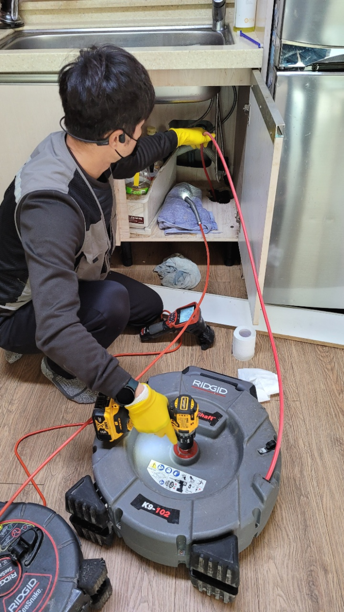
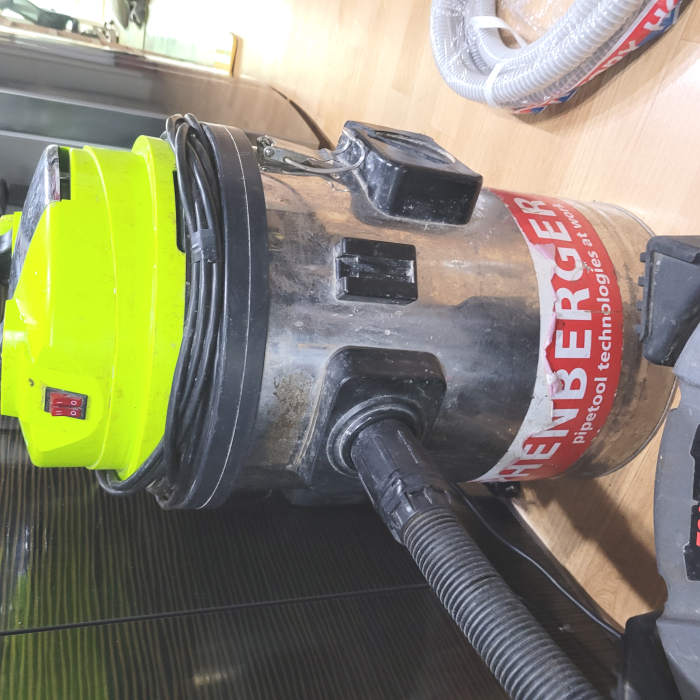
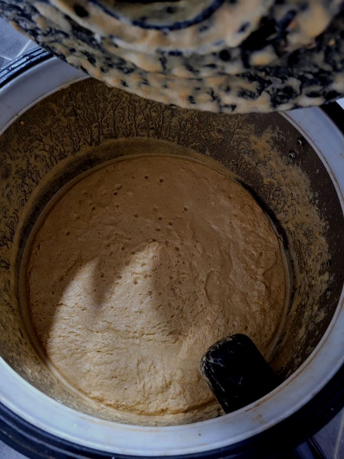
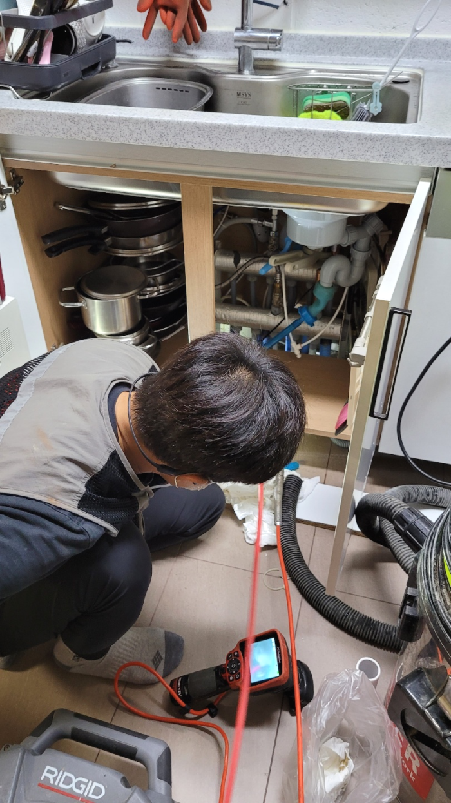
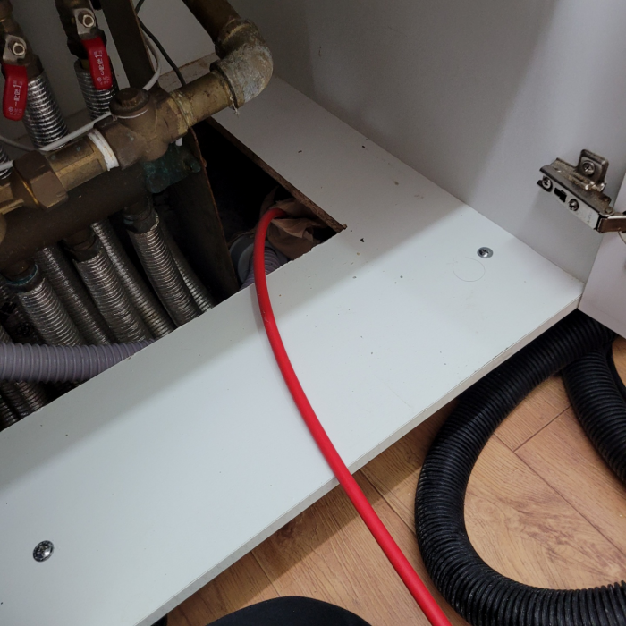
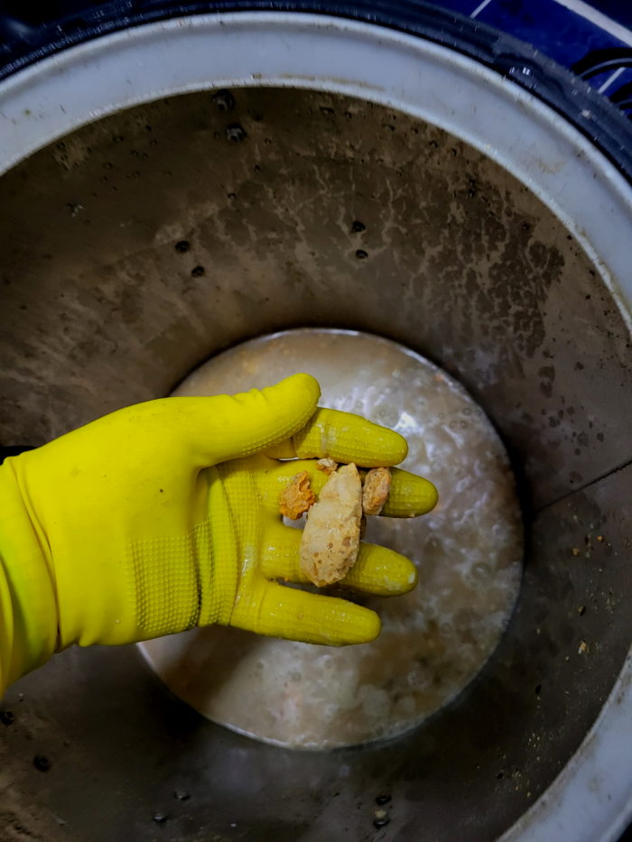

🏠 사당 싱크대배수관막힘 방배동 하수도역류 뚫음 설비업체
용인 싱크대막힘 전문 시공 후기

📋 작업 개요
- 위치: 용인
- 서비스 유형: 싱크대막힘, 변기막힘, 하수구막힘, 배관막힘, 집수정막힘, 역류해결, 뚫는업체, 배관청소, 고압세척, 설비공사
- 작업 일시: 2023. 12. 27. 22:54
- 업체명: 하수구수사대 (010-5615-2118)
🔍 문제 상황
안녕하세요^^
설비전문업체 "하수구수사대"를 찾아주셔서 고맙습니다.
막혀버린배수구때문에 뚫어야한다면 오늘글이 도움이 되실겁니다. 배수구구조를 잘아는 경우는 흔하지 않아서 어떤 방법으로 뚫어야할지 난감합니다.
사당 싱크대배수관막힘 방배동 하수도역류 뚫음 설비업체
간단한 석션 작업만으로 제거할 수 있었던 이물질도 내버려 두게 된다면 나중에는 하수관배관 스케일링을 받아야 하는 상황까지 이어질 수 있으며 역류가 일어난 상황에는 아래층에까지 피해를 주게 되어 피해 보상까지 해줘야 할 수 있습니다.

🔎 원인 분석
💡 전문가 진단: 사당 싱크대배수관막힘 방배동 하수도역류 뚫음 설비업체
하수관 구조를 명확히 이해하고 있어야만 작업 진행을 하기 전에 어떤 것으로 인해서 막히게 되었을지 간단한 예상도 할 수 있고 단계적인 진행을 할 때 이런 전문지식은 작업시간 단축에 큰 도움이 됩니다.
배관 외부 초입부터 시작해서 배관 내부까지 빠짐없이 꼼꼼하게 확인할 수있는 배관 내시경장비가 가장 기본적인 장비인데요 하수도막힘을 해결하는데 이 장비 조차 없이 다니는 업체가 방문한다면 잘 해결 되었는지 조차 알수가 없어요.
고체 물질은 오히려 보이지 않는 배출관 안으로 들어가면서 심하게 막히게 되는 경우가 있습니다. 이때는 배출관 배관을 들어내는 큰 공사까지 해야 할 수도 있기 때문에 혼자서 해결을 하지 마시고 전문 업체를 통해서 진행을 하시는 것이 더욱 시간이나 비용적으로도 합리적으로 처리할 수 있습니다.
일단 고여있는 물들을 약간 퍼내고 난 뒤, 바로 퇴수구로 내시경 카메라를 삽입하였습니다. 내시경 카메라는 퇴수구는 물론이고 세면대 배관, 변기 배관, 싱크대 배관 등의 퇴수구막힘으로 불러주시는 고객님들의 현장에서 늘 사용되는 작업 장비 중 하나입니다.
집수정에서 계속 작업을 이어나가면서 퇴수에서 기름 덩어리가 많이 나왔는데 이를 충분히 제거해 주고 나면 내시경 장비로 점검하면서 어느 정도 작업이 진행되고 있는지 퇴수내부를 확인해가며 작업을 하고 있습니다.

🔧 작업 과정
심화돼버리면 배출관막힘은 기본이고 역으로 올라오는것이 걱정되실텐데요 이정도로만 그치진않죠. 혹여라도 악화돼버린다면 물들이 집안으로 흘러들기도합니다.또다른문제는 어떤물도 사용할수가없는것이겠죠
퇴수구 배관안쪽에 이물들이 상당량 쌓여있지않거나 배수관겉에 소량 있다면 개선되는것은 사실이겠으나 안전하지못하고 또다른문제로 불거질수있으니 적절치못한조치들은 자제해주세요.
하수관전문업체를 찾아서 간단하게 수리할수있었던 문제들도 이때문에 심화되기만해요.이러하기에 금액절약을위해 무리하면서 시도해보시는것은 일단 멈춰주시는게좋아요.
다수의전문회사들이 비싼기계를 가지고있는게아니라서 퇴수구가 막혀있는곳으로 출동했다가 필요하지않은 기계들만있기때문에 수리가안되기에 되돌아가는일도 많이있어요.거기다가 비용을추가로 달라하는경우도 꽤많기에 퇴수구뚫지못했는데도 금액을내야하는 이와같은일들이 일어나게됩니다.
도움을필요로 하신다면 항상 일하고있기때문에 평일주말상관없이 시간상관없이 전화주시면된답니다!하단쪽에 첨부한사진을 확인한다음 문의를주시면 궁금하신것에대해 알려드리고 배출관막혔다면 대한민국어디든 곧장출장가드리겠습니다.
저희 업체는 다년간 쌓아온 여러 현장에서의 경험 및 노하우를 바탕으로 고객님들께 가장 빠르고 속 시원히 해결해 드릴 수 있는 배수관 문제해결방법 및 예방법 등을 제시해 드리고 있습니다.
오래된 기름 슬러지도 배관 스케일링을 할 시기를 지나 이미 굳은 상태였기에 차곡차곡 쌓인 그동안의 이물질과 함께 제거를 하기 위해 배수배관 스케일링 작업을 시작했습니다.
이름에서도 알 수 있듯이 굉장히 높은 수압으로 이물질 찌꺼기들을 빠르게 분쇄하는 작업인데요. 유입된 이물질의 양이 실내보다 더 많고 하수관배관 또한 견고한 실외에서는 특히 더 효과적인 방법입니다. 10미터 넘는 긴 구간을 꼼꼼히 살펴보면서 세척을 해주었으며 중간에 이물질도 외부로 제거해 줍니다.


✅ 작업 완료
그리고 심각하게 오지요. 그럴 때에는 셀프 뚫음보다는 이렇게 배수구 전문설비업체에 의뢰해서 확실하게 문제를 해결하는 게 결과도 좋고 문제없이 변기 사용을 할 수 있는 좋은 방법이랍니다.
#하수구막힘 #하수구뚫음 #하수구역류 #씽크대막힘 #싱크대역류 #오수관막힘 #하수구청소 #욕실하수구막힘 #변기막힘 #하수구뚫는비용 #싱크대수리 #화장실막힘




⚠️ 주방 싱크대 배관 막힘 예방 수칙
- ✅ 기름기가 묻은 식기나 프라이팬은 설거지 전 키친타올로 반드시 기름때를 닦아내세요.
- ✅ 주기적으로 싱크대 개수대에 뜨거운 물을 가득 받아 한 번에 내려 배관 내부 기름을 씻어내세요.
- ✅ 배수구 거름망을 미세한 필터로 사용하시고 음식물 찌꺼기가 틈으로 새어 들지 않게 관리하세요.
- ✅ 베이킹소다와 식초를 뜨거운 물과 함께 일주일에 한 번씩 부어주면 배관 살균과 막힘 예방에 좋습니다.
💡 핵심 정리
- 확실한 장비 작업(내시경 점검 및 샤프트 스케일링)으로 원인을 뿌리 뽑습니다.
- 작업 후 1년 이내에 동일한 부위 재발 시 100% 무상 A/S 서비스를 보장합니다.
- 서울 · 경기 · 인천 전 지역에 24시간 언제든 긴급 출동할 수 있도록 항시 대기 중입니다.
❓ 자주 묻는 질문 (FAQ)
🚨 용인 싱크대막힘 문제로 고민이신가요?
정확한 원인 진단과 확실한 시공으로 재발 없는 해결을 약속드립니다.
24시간 긴급 출동 | 서울 · 경기 · 인천 전지역 | 1년 내 재발 시 무상 A/S